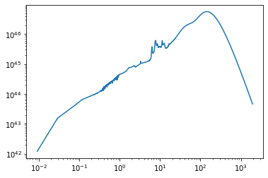

[11]:
import torch
import pylab as plt
import numpy as np
%matplotlib inline
[12]:
from xidplus import sed
SEDs, df=sed.berta_templates()
[24.0, 100.0, 160.0, 250.0, 350.0, 500.0]
[3]:
SEDs.shape
[3]:
(32, 6, 800)
[6]:
plt.loglog(df['wave'],df['SF_Type1_AGN_1.norm_LIR'])
[6]:
[<matplotlib.lines.Line2D at 0x12b459080>]

[9]:
(10**12)*SEDs[0,:,10]
[9]:
array([ 42.03301909, 2782.13424166, 2534.13900851, 1370.30674646,
640.19774872, 234.71008395])
[13]:
red = np.arange(0, 8, 0.01)
red[0] = 0.000001
[15]:
red.shape
[15]:
(800,)
[16]:
800*500*32
[16]:
12800000
[17]:
200*250*32
[17]:
1600000
[25]:
LIR_orig=torch.arange(5,15,0.1)
z_orig=torch.arange(0,8,0.01)
[51]:
z.repeat(LIR_orig.shape[0]).repeat(SEDs.shape[0])
[51]:
torch.Size([2560000])
[53]:
LIR_orig.repeat_interleave(z_orig.shape[0]).repeat(SEDs.shape[0]).shape
[53]:
torch.Size([2560000])
[ ]: